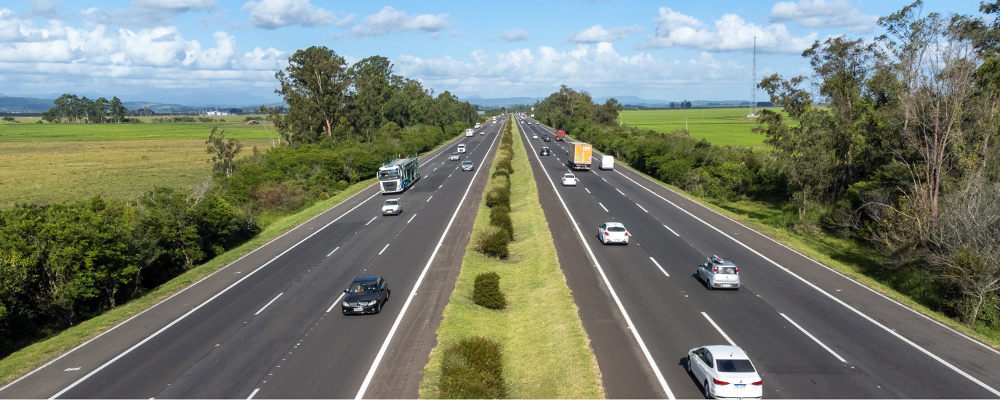
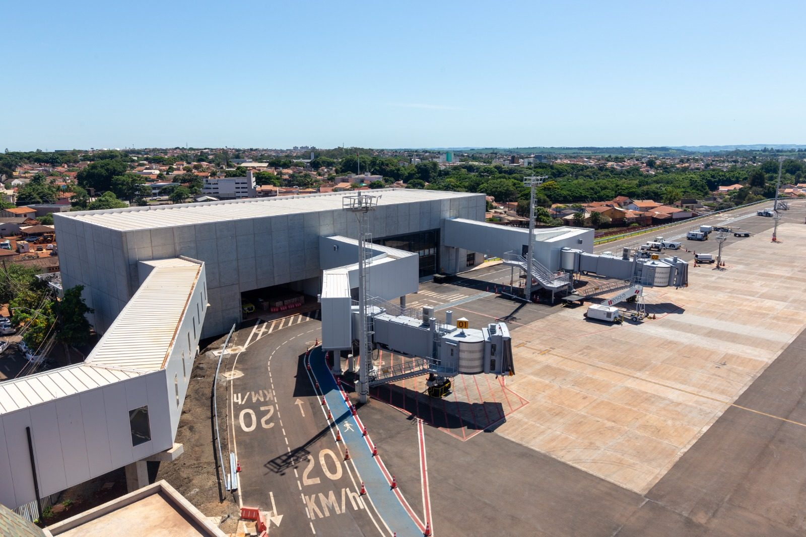
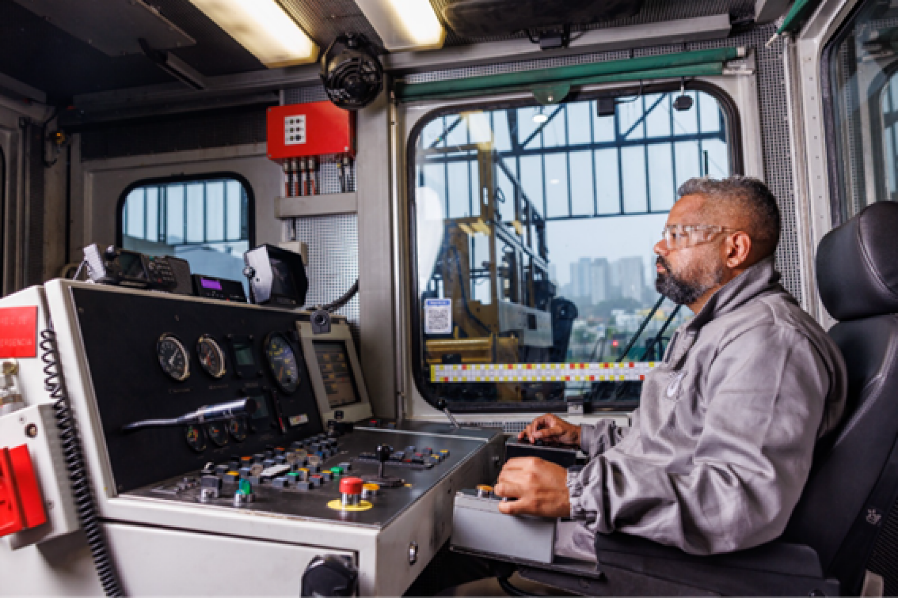

Quem somos
A Motiva existe para conectar pessoas e transformar caminhos. Somos a maior empresa de infraestrutura de mobilidade do Brasil, atuando em concessões de rodovias, trens, metrôs e aeroportos, com valores inegociáveis que sustentam todas as nossas ações.
O que fazemos

Rodovias
Cuidamos da gestão e operação de rodovias em todo o Brasil para garantir que as pessoas tenham um caminho tranquilo e seguro.

Aeroportos
Trabalhamos para garantir a melhor experiência aos nossos passageiros, promover rotas estratégicas e desenvolver o turismo local.

Trilhos
Nosso objetivo é garantir a melhor experiência para as milhões de pessoas que viajam com a gente: uma jornada segura e confortável.
Nossos Valores - Instituto Motiva
Criado há mais de uma década, o Instituto Motiva é uma entidade privada sem fins lucrativos que gerencia o investimento social da Motiva. Seu propósito é promover a transformação social e impulsionar cidades sustentáveis.
Nossas iniciativas focam em educação, saúde e desenvolvimento local, sempre com olhar voltado para o futuro e a inovação social.
Oportunidades
Adotamos um modelo federado de governança, que equilibra autonomia e alinhamento estratégico. A estratégia de inovação da Motiva está ancorada em três imperativos que orientam todas as nossas iniciativas:
- Inovar para gerar valor e vantagem competitiva nos negócios;
- Liderar em experiência do cliente e sustentabilidade, com foco em segurança;
- Impulsionar a digitalização e o uso de tecnologia como alavanca de transformação.
Desafios do Setor
| Desafio | Impacto | Nossa Solução |
|---|---|---|
| Monitoramento de extensas malhas rodoviárias | Alto | Visão computacional e drones para monitoramento automatizado. |
| Oscilação nos custos de insumos | Médio | Investimento em GreenTech e eficiência operacional. |
| Vulnerabilidade de comunidades | Alto | Fortalecimento do Instituto Motiva e programas de saúde itinerante. |